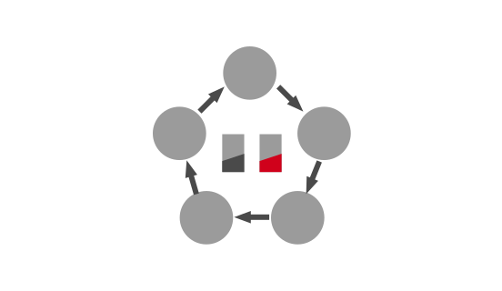
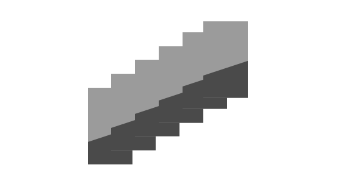

Each player has to pass out one card facing down in their turn. The player on the left has to decide whether accept this card or pass it to the next player.

Beginning Session: The first session of a new round. The player of this round will have a drawing session right after the beginning session.
Drawing Session: Drawing session appears after the Beginning session. The Player could draw 2 cards from the deck.
Action Session: The session right after the drawing session. The player of this round can uses any function cards or skills which are allowed to be used during action session.
Mailing Session: The player of this round should pass a mailing card facing down to the player on his left. If the next player does not accept the mailing card, he/she should pass it to the next player. The mailing card should be passed in clock order. Those who decide to accept this card should do a sanity test with it. If no other player accept this mailing card, the player of this round should do a sanity test with this card.
Sanity
Once the player accepts the mailing card, he/she should reveal this card. If it’s a red card(vision), the player will lose 1 sanity. A player lost all his/her sanity must quit the game immediately.
Sanity Test: Reveal the mailing card. If it is knowledge, the player should add this card into his/her data folder. If it is vision, the player will lose 1 sanity. Those who accept the mailing card must do the sanity test.

Knowledge
During the sanity test, if the mailing card turns out to be black(knowledge), the player who accepts it should place it in his/her data folder. The player who first collect 6 knowledge cards can claim his/her victory.
Investigators
A - Z
Archaeologist
♀ San:3 👁️
- When a player uses Curse on you, you can flip your investigator card facing up and draw 3 cards.
- ⭐When you turn insane, you can let a player draw 3 cards randomly from your hand and do sanity test with them by order. If a game ends during this skill, you can declare your victory (even when you are insane).
- During your sanity test, all knowledges cards are Visions to you and all vision cards are Knowledges to you.
- You cannot use Stalking, instead you can put them in your data folder as knowledges in your own turn.
- During other player’s mailing session, you can discard a card from your hand and put any mailing card in front of you to any player to do a sanity test.
- Every time when other player loses his/her sanity, you can draw a card.
- When a mailing card passed through you, you can discard a knowledge from your hand and flip this mailing card. If the mailing card turns out to be Vision, you can draw 2 cards.
- When a player use BloodMoon, you can flip your investigator card facing up. Once your investigator card is facing up, you can always check the cards that would be drew during BloodMoon and assign them to any player you want.
- When a player loses his/her sanity, you can discard a Vision card from your hand and do 1 more damage on this player.
- ⭐When the last male character or female character(exclude you) turns insane, you can declare your victory.
- When you have more hand cards than your current sanity, you must share your extra cards to any other player by the end of your turn. When you have less hand cards than your sanity, you can draw cards until your hand cards equal to your sanity.
- When you declare your victory, you can also pick one other player to declare victory. When you turn insane, the owner of this turn will lost his/her skills and knowledges in their data folder.
- When a mailing card passed in front of you and your investigator card is facing down, you can flip your investigator card and check the mailing card by yourself, then draw a card.
- When a player uses Stalking or Curse: Spotlight, flip your investigator card facing down.
- When in your own turn, you can flip your investigator card facing up and discard all your hands. Check the rest investigator cards that are not used in this game, pick one enter the game facing up in replace of Novelist. Draw 3 cards.
- When other player successfully uses a Syllogism, you can collect this Syllogism to your hand.
- ⭐When the 4th Syllogism enter any player’s data folder, you can declare your victory.
- By any time, you can discard 2 cards from your hand and consider it using a Exorcism.
- When a player loses sanity, they can allow you draw a card from their hand randomly.
- ⭐When a player declare victory with full sanity, you can declare your victory too.
- When a player turns insane, you can collect all his/her hand cards to your hand, move his/her collected knowledges to your data folder and recover yourself to full sanity.
- You can use this skill in your own round. Discard 2 knowledges or 2 visions from your hand, consider it using a BloodMoon.
- Your max sanity equals to the number of players when a game begins. You can lose 1 sanity deliberately in your own turn and recover one other player to full sanity.
- When you are in game. Exorcism cannot recover sanity. Instead it will lose 1 sanity.
- When a player recover his/her sanity, you can put 1 knowledge card from your hand to data folder.
- Lost 2 sanities. Keep drawing cards from the deck until you draw a knowledge card. Place this knowledge card in your data folder and discard the rest.
- Can be used at any time. Choose a player and place devil trap in front of him/her. In the upcoming mailing session, when a card passed in front of this player, he/she must take this card do a sanity test immediately.